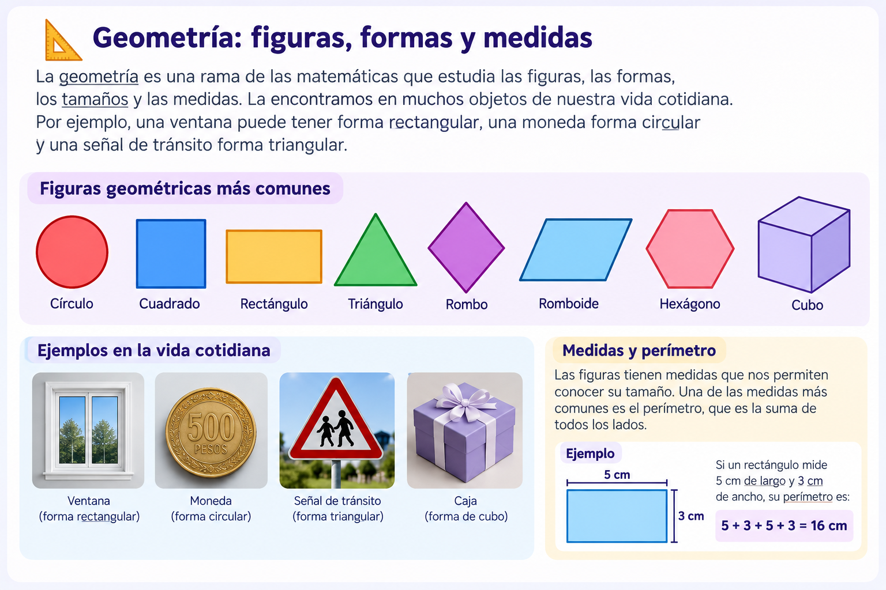
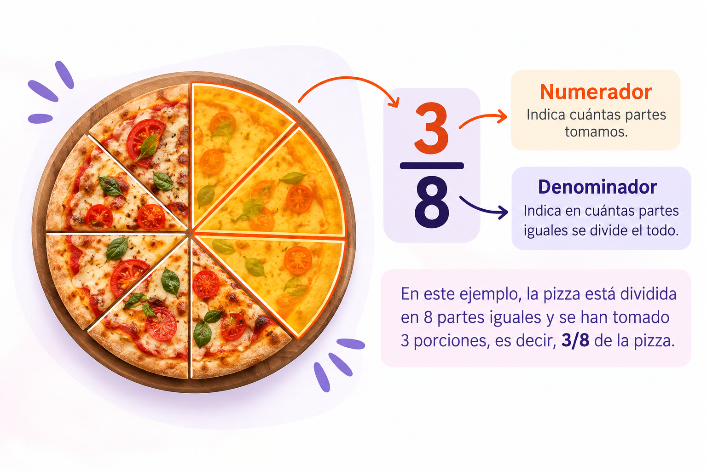
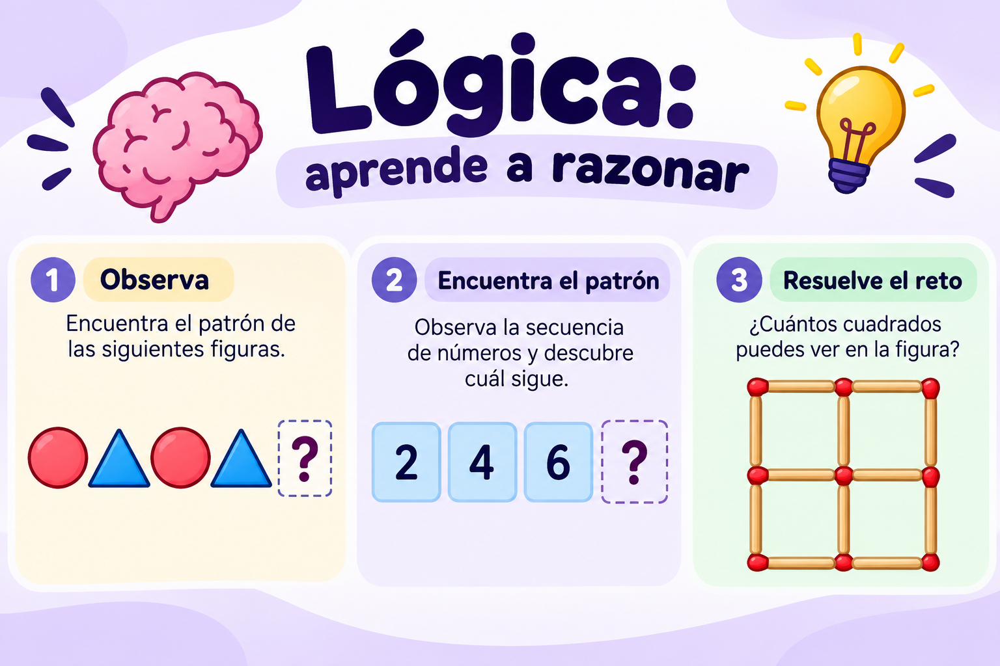

📐 Geometría
Aprende sobre figuras, formas y medidas.
Descubre, juega y aprende de una manera divertida.
Descubre, juega y aprende de una manera divertida.

Las matemáticas están presentes en nuestra vida cotidiana. Nos ayudan a pensar, razonar, resolver problemas y comprender el mundo que nos rodea.
En esta página encontrarás recursos educativos para explorar conceptos matemáticos de manera sencilla y divertida.
¡Anímate a aprender y descubre todo lo que las matemáticas tienen para ti!
Aprende sobre figuras, formas y medidas.
Descubre cómo dividir una pizza en partes iguales.
Desarrolla tu razonamiento resolviendo problemas.

La geometría es una rama de las matemáticas que estudia las figuras, las formas, los tamaños y las medidas.
La encontramos en muchos objetos de nuestra vida cotidiana. Por ejemplo, una ventana puede tener forma rectangular, una moneda forma circular y una señal de tránsito forma triangular.
Ejemplo: si un rectángulo mide 5 cm de largo y 3 cm de ancho, su perímetro es 5 + 3 + 5 + 3 = 16 cm.

Una fracción representa una o varias partes iguales en las que se divide un todo.
El numerador es el número de arriba e indica cuántas partes tomamos. El denominador es el número de abajo e indica en cuántas partes iguales se divide el todo.
Ejemplo: si una pizza se divide en 8 partes iguales y comemos 3, hemos comido 3/8 de la pizza.

La lógica nos ayuda a analizar situaciones, encontrar relaciones entre los datos y resolver problemas paso a paso.
Para resolver un problema, primero comprendemos la pregunta, después identificamos los datos y finalmente buscamos una solución.
Reto: tienes 12 lápices y quieres repartirlos por igual entre 3 estudiantes. ¿Cuántos lápices recibe cada uno?
Respuesta: 12 ÷ 3 = 4 lápices para cada estudiante.
Las matemáticas están presentes en nuestra vida cotidiana. ¡Descubre, observa y aprende!

Las figuras geométricas nos ayudan a comprender las formas que encontramos a nuestro alrededor.

Los números nos permiten contar, medir, comparar y resolver problemas.
Aprende cómo utilizamos la matemática todos los días
Ver videos educativos de matemáticas¡Es hora de poner a prueba tus conocimientos!
Si tienes 3 cajas y en cada caja hay 4 lápices, ¿cuántos lápices tienes en total?
¡12 lápices! Multiplicamos 3 × 4 = 12.